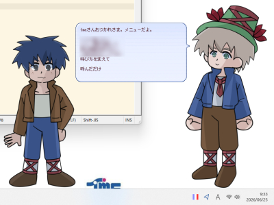

t0-ma作・伺か特設コンテンツ : ゴースト「レミ一座」

エクトール・アンリ・マロ著「家なき子」について語る、伺か用のゴーストです。
シェルは大き目に作っているため、SSP使用であれば必要に応じて倍率を変更してください。
使用テンプレート: ポストと狛犬

エクトール・アンリ・マロ著「家なき子」について語る、伺か用のゴーストです。
シェルは大き目に作っているため、SSP使用であれば必要に応じて倍率を変更してください。
使用テンプレート: ポストと狛犬